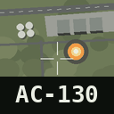

Pick a game
 Survivor.io Vita
Survivor.io Vita
AC-130 SpectreStairway to Heaven
 Quilt Cats
Quilt CatsWriting a good bug report
- Say which game it is, and the file name or version if you know it (like
StairwayToHeaven_build35.vpk). - Describe what happened and what you expected instead.
- List the steps to make it happen again, if you can.
- Tell us your Vita model (1000, Slim or PSTV) and firmware version.
- A screenshot or a photo of the screen helps a lot.
These games are hobby projects, so replies can take a while. Suggestions are always welcome, but there's no promise they'll make it in.